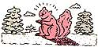
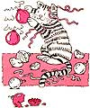

Freezes don't faze our readers.
WINTERWISDOM
Ice storms are fairly common here in the Northeast. After a particularly fierce one, I awoke the next morning to a beautiful frosty world. Crystals glistened on the limbs of trees, atop power lines and fences . . . and in the locks of my car doors. For two hours I laboriously followed the advice of sympathetic neighbors: Heat the key, squirt graphite into the lock, spray in rubbing alcohol, melt the ice with a hair dryer. Finally, one of these methods (or perhaps a combination of them) worked. But I got an idea from one neighbor who bemoaned the fact that cars no longer come equipped with little metal tabs protecting the locks. I now carry a roll of masking tape in my car, and whenever the weather threatens, I stick a small piece of tape over each lock and haven't had a problem since.
Jean Schuler
Whitestone, New York
Salad Surprise
At summer's end I can the last of our wonderful vine-ripened tomatoes; after that our fresh salads have to make do with pale, tasteless tomatoes from the supermarket. That is, they did till I made an accidental discovery. One evening, as I was using my canned tomatoes in a casserole, I decided to see what would happen if I poured the juice over those bland wedges awaiting the salad greens. It was amazing. After about 15 minutes the cold-storage tomatoes tasted like they were fresh from a sunny garden.
Bettye Kelly
Kingsville, Texas
Score One for the Birds
My mother figured how to keep squirrels off the bird feeder. She took a length of heavy wire, strung it with empty thread spools and stretched it between two trees. The feeder hangs in the middle, and no animal can walk across those spinning spools.
Nancy Carey
Glens Falls, New York
A Tonic for Your Tree
I decorate my Christmas tree in early December, and though I don't take it down till mid-January, it doesn't shed its needles but stays fresh and green. Lots of people mix sugar or aspirin into the water in the tree stand, but my formula works better. To a gallon of water I add two cups of white Karo syrup, one cup of Listerine and four ground-up multivitamin-with-iron tablets. I make up about two gallons of this solution, stirring it well. Then, after sawing a half-inch off the stub of the trunk to help it absorb nutrients, I place the tree in the stand. After filling the bowl of the stand with the tonic, I check the amount every other day or so, and add more as necessary. I've used this method for years, and I never worry about my trees drying out.
Joseph Zsiga
Rock Hill, South Carolina
Foiling a Frolic
Our kitten loved to jump up into the Christmas tree, batting at balls and getting tangled in the tinsel. This was cute to watch, but our decorations were taking a beating. Knowing that garlic repels cats, we placed a few pieces of a fresh, peeled clove under the tree skirt. Our human noses couldn't detect the slightest odor, but Kitty decided to play elsewhere.
Roger T. Finley
Lomira, Wisconsin
Boomer's Bonnet
Though a shed protected our poultry from bitter winds, one harsh, blustery, Illinois winter was particularly hard on our roosters. Their combs were frostbitten and started turning black around the edges. Pitiful! I cut an old, blue-flowered shower cap with a terrycloth lining into eight circles, then stitched elastic around the rims. These caplets were slipped over the combs of eight struggling, squawking roosters, but after a bit of head shaking and scratching, they accepted them gratefully. (I could almost hear the hens snicker.) Boomer liked his so much he wore it well into spring. We had a mad chase through the crocuses and daffodils when I finally took it of!
Polly Cooper
Savannah, Georgia
Is Your Chihuahua Chilly?
Many small dogs really do need sweaters to go out in winter weather. Those from pet stores tend to be expensive, but very satisfactory substitutes can be found in the infant and toddler sections of department stores. Zippered sweaters are best (just turn the garment around and zip it up the back of the dog). It's easy to find the correct size for your pooch, and you can take advantage of sales to further reduce the cost.
Dorothea Warner
Groton, Connecticut
Firewood Bonanza
I heat with wood but don't have my own lot to cut from. As the cost from suppliers in this city is very high, I looked for an alternative. A local tree service employee told me where they dumped their "refuse." And when I went there, I found that at least 10 other such enterprises used the same landfill. Right at hand were some 10 cords of oak, red oak and maple, all cut to two-foot lengths. Paying just $1 per visit gate fee, I loaded my van with several winters' worth of virtually free heat.
Stephen Brown
Birmingham, Alabama
Traction Trick
Many of us don't enjoy hauling a 50-pound sack of sand around in our car's trunk to help us get moving on ice and snow. For years I've carried a couple of boxes of table salt for the same purpose. They don't add significant weight in the rear, of course, but they can provide traction when the tires start to spin. I simply pour a boxful directly in front of and behind each rear tire (do the front tires for front-wheel drive). By the time I get back into the car, I'm able to drive away. It's worked every time.
Dolores Anderson
Levittown, Pennsylvania
Traction Trick II
After rinsing out and thoroughly drying one of those large plastic jugs that contain liquid or granular laundry detergent, I fill it with dry sand. I carry it in the trunk of my car to sprinkle on ice and snow in case I get stuck.
Ernie Soliday
St. James, Minnesota
Money to Burn
Here's an inexpensive gift to make for friends with fireplaces, woodstoves or charcoal grills. Collect a supply of paper play money and some sawdust or cedar chips, then melt a cup or so of paraffin or candle stubs. Roll each paper bill into a tube, using tape to hold its shape. Pour enough wax onto the sawdust or chips to make a sticky mass, and stuff the mixture into the cylinders. A small basket filled with neat rolls of "10s and 20s," and perhaps tied with a bow or sprig of holly, is both attractive and functional. Since they're waterproof, these fire starters are also an easy-to-carry source of emergency heat for camping, hiking, ice fishing and such.
Mikki Smith
Lexington, Michigan
|
|
 |
 |
|
|
|
|